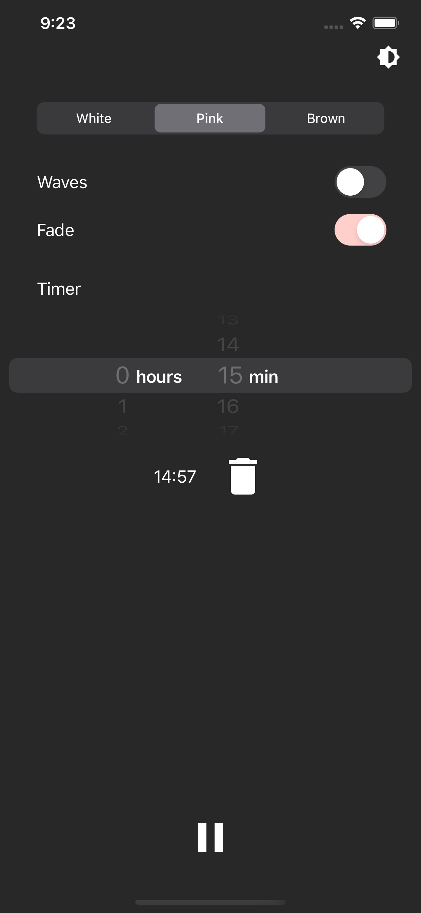

David Albers
PDF version
|
GitHub
|
LinkedIn
|
Other stuff
Currently
Android Developer
at
Acorns
Since February 2022 · Remote in Chicago, IL
Customized Gradle and CI pipeline to decrease test time by 75% and total CI usage by 50%
Converted Acorn's screenshot testing framework to use JVM-based testing with
Roborazzi
Added
AffectedModuleDetector
to only test affected modules
Lead effort to replace cache singleton with Apollo Kotlin's
normalized cache
Refactored cache singleton usage in View to use MVVM with Apollo
Created extensive docs on using caching and how to refactor View architecture
Release manager for the weekly release rotation
Automated release management so devs no longer ran custom release scripts
Added metrics for flaky tests and used it to fix common issues
Went from 20% CI runs failing due to flaky tests to near-zero
Improved instrumented test framework stability so it could be used as a release check
Used Datadog to track custom metrics and built custom dashboards for feature teams
Previously
Android Developer
at
Expedia
January 2018 – February 2022 · Chicago, IL
Integrated a new GraphQL API using Apollo Android
Migrated lodging LOB from REST to GraphQL
Built new features across lodging, homescreen, and trip LOBs using GraphQL
Helped bring Expedia's design system to Android
Wrote design system tokens and code for system's Android library
Built custom
Views
adhering to the system
Core team member on a project that combined the design system & API to build a library of reusable server-driven UI (SDUI) components
Created proofs-of-concept and later implemented solutions for library architecture
Set up publishing of library on Jenkins then later migrated it to GitHub Actions (GHA)
Helped onboard teams of contributors to the project
Wrote blog posts and gave presentations to other devs about design system, GraphQL, and SDUI library on Android
Wrote integration tests using Robolectric, helped convert existing code to MVVM
Android Developer
at
First Orion
November 2016 – December 2017 · Little Rock, AR
Handled push messages from both Google Cloud Messaging (GCM) and Firebase
Utilized Realm for efficiently storing and reading large amounts of data
Wrote UI and unit tests in Espresso, Mockito, & others
Software Engineer
at
CymSTAR
January 2016 – November 2016 · Tulsa, OK
Modified A-10 Simulator for added functionality and bug fixes
Debugged and solved issues caused by upgrading real-time OS (VxWorks) on simulator
Implemented additional constraints for scheduling genetic algorithm in C
Software Intern
at
InvoTek
August 2011 – January 2016 · Alma, AR
Created accessible user interfaces by providing alternative access methods such as eye-tracking
Implemented Bluetooth communication in apps and developed custom Views in Android
Projects
White Noise Plus
for Android & iOS
White noise app focused on useful, simple features
Available on
Play Store
and
App Store

Open Source Contributions
Fork: Upgrade AGP 4.1.0
AffectedModuleDetector: Trying to resolve a bug